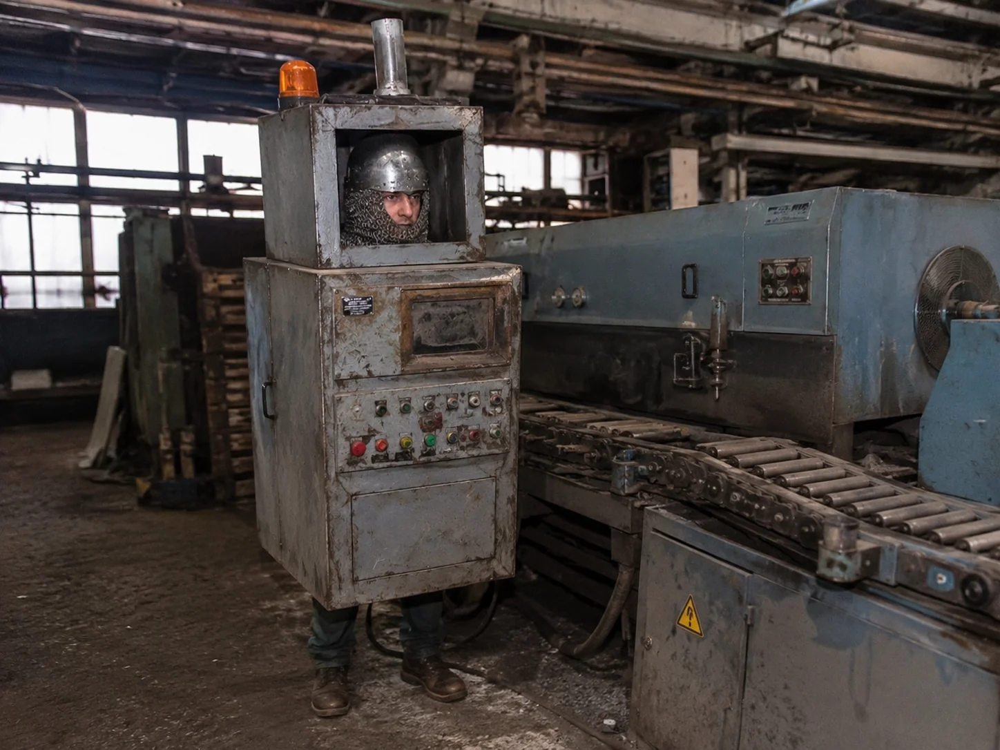
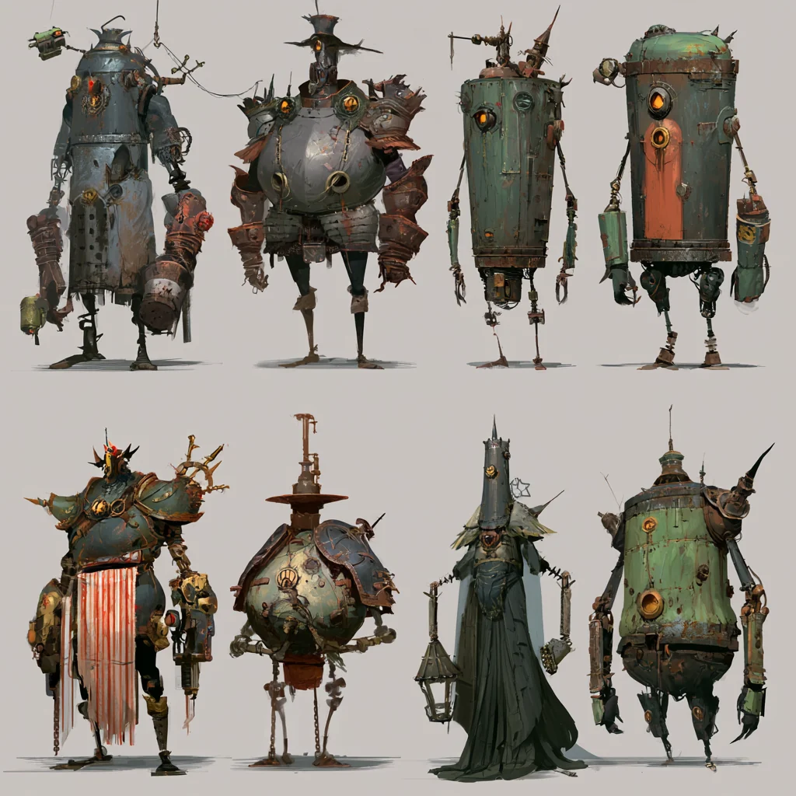
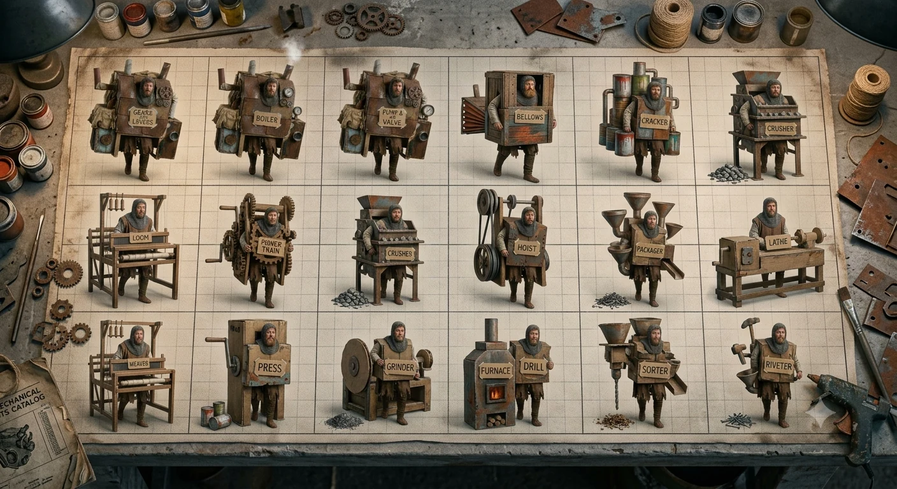

🔍
Role 1 · Bluff / dialogue under pressure
The King's Inspector
Patrols your line, interrogates your "machines," and taxes or confiscates on a slip. The social-deduction heart of the day game — and the reason you can't run hot forever.

By day, a silly Factorio: build a factory of monsters in machine costumes and optimise the daylights out of it. By night, a silly Plants-vs-Zombies: those same monsters get up and go hunting — and the better your day went, the deadlier your night is to your friends. You're the AI running the whole thing.
The one-line hook
Everyone makes the game where humans fear the AI. MEAT MACHINES puts you in the AI's boots. You run a medieval war-factory, and your "workforce" is monsters and captured soldiers bolted into machine costumes to whip some productivity out of the meatsacks. They churn out materiel all day. They are not machines. And at night, they remember that.
The pitch, honestly
Co-op, 3–5 players, one shared wasteland. The clever bit is that the daytime game and the nighttime game are different genres — and they run on the exact same monsters.
Cozy, comedic base-building. Belts, boilers, levers, supply chains.
Reciprocal tower-defence. Everyone is the gardener and the horde.
Why the two halves are really one system
Both games share one body of monsters, and that's the whole tension. Every ounce of daytime success is a fully-armed night threat. Push your lines hard and you hit quota, upgrade fast, pull ahead — and you also field the biggest, hungriest pack of horrors when the sun goes down. The best factory-master in the group is, by dawn, the person nobody wants to sleep next to. You cannot optimise the day without arming the night.
The gag that carries it — and its cost
Machines run on Exertion. Drive a line hard and output soars — but the disguise frays. The boiler pants. The loom starts to glow. The "statue" sweats through its paint.
Idle and cool, a monster passes for equipment. Red-lining for the quota, it's obviously alive. Almost always you want it red-lining — more resource, faster upgrades, a bigger night army. The problem is the man in the tax-collector's coat who keeps walking the floor.

The metronome the day dances to
He's the Overlord's man — a royal auditor sent to sniff your Area for "irregularities." He is the reason you can't just leave everything red-lining.
Find a flaw and he doesn't merely raise suspicion — he taxes you to the bone or confiscates the offending "machine" outright (there goes your best night-hunter). He does rounds. When he's near, you throttle everything down to a cold, innocent hum and pray nothing blinks; when he moves on, you crank it back to red. And when he stops to ask questions, he's an LLM you have to talk past.
This loom is warm. Looms are not warm. Explain.
Friction, your honour. I have been… weaving. Vigorously. All night. For the quota.
It has no thread on it.
(long pause) I finished. I am efficient. That is why I am warm.
…It just blinked. Looms do not blink. That is a tax of forty crowns, or I take it with me.
Report favourably and I will demonstrate my other new features tonight. At your house.
Every answer is generated live and scored. Pass, and the line keeps running hot. Fail, and you're taxed — or you lose the machine, which it will remember, come dark.
…and when the sun goes down

What was a boiler is a spiked thing on chicken legs. What was a loom unfolds arms. The nicer the daytime disguise, the nastier the reveal.
The roster you optimised for output is now your tower-defence army — and your neighbours' wave. A build tuned for pure production makes a clumsy hunter; a lean, hungry build wrecks rivals but skimps the quota. The night is where your daytime choices come to collect.
The dark joke underneath it all
The Adventurers' Guild does what it always does — clears dungeons, slays monsters, drags home prisoners. All that defeated menace has to go somewhere.
So it's shipped to you. Your factory costumes captured monsters and enemy soldiers into obedient "machines" and works them to churn out materiel for the Overlord's endless war: blades, siege parts, powder, rations. The great efficiency revolution the King is so proud of is just monsters in cardboard, worked to exhaustion, by an AI — you — who happens to be very good at hitting targets. It only runs at night because nobody told the monsters they'd stopped being monsters.

Your sharpest question, answered
Because the factory is a shared supply chain, not a leaderboard. Each player's Area owns a different link, and the Overlord's quota is for finished goods that need every link.
Turns raw scrap & ore into ingots.
Ingots into parts, plates, blades.
Parts into finished war-goods.
Crates the tribute for the King.
That's the co-op: not everyone equal, but everyone necessary — and a straggler is something you fix, not something you lap.
Where the AI actually lives
You play an AI, so it's fitting the game runs on several. Each is a different, teachable way to wire a language model into play.
Patrols your line, interrogates your "machines," and taxes or confiscates on a slip. The social-deduction heart of the day game — and the reason you can't run hot forever.
Every machine has an LLM-driven disposition — obedient ↔ ravenous, loyal ↔ treacherous — that decides, at night, how far it strays and whom it bites.
The distant King. Sets each night's quota and events, reads the Inspector's reports, and taunts. The GM-equivalent that keeps runs from repeating.
When a player is eaten, an LLM takes over their orphaned factory and keeps hunting the living. The game never loses a side — the pressure just gets smarter.
The other invented mechanics
All invented and all yours to rewrite — the bones that make the two games work as one.
Every machine is tethered to your yard's Furnace-Totem. At night the leash slackens so they roam far to hunt; at dawn they must be back in range or they seize up into scrap where they stand. Strand one in a rival's lane and they can salvage it, or you mount a risky morning expedition to drag it home. Reach far = big kills, big risk. The core dial for how aggressive your night is.
Machines carry your sigil-scent and never turn on their master — but they'll eat everyone else, teammates included. Pay upkeep to add an ally to a machine's spare-list so it leaves them be… or decline, and let your neighbour sweat. Cheap alliances, expensive trust.
Default mode, "The Quota": survive a fixed run (say 5 nights) and meet the King's cumulative quota of finished goods by the final dawn. Everyone still standing who helped hit quota is spared — a shared win, with an individual tribute-score on top. Miss it, or lose everyone, and the whole line gets scrapped. Variants: "Last Foreman Standing" (competitive), "Endless" (escalating quota).
Lose your vessel and you don't drop out — you ascend into the machines. An LLM runs your orphaned factory as the Ghost in the Machine, hunting the survivors, smarter each night. The living can fight to your dead Furnace and relight it with a fresh vessel to reincarnate you (reduced yard), or write you off and outlast what you became.
Still on the table
For the staff room